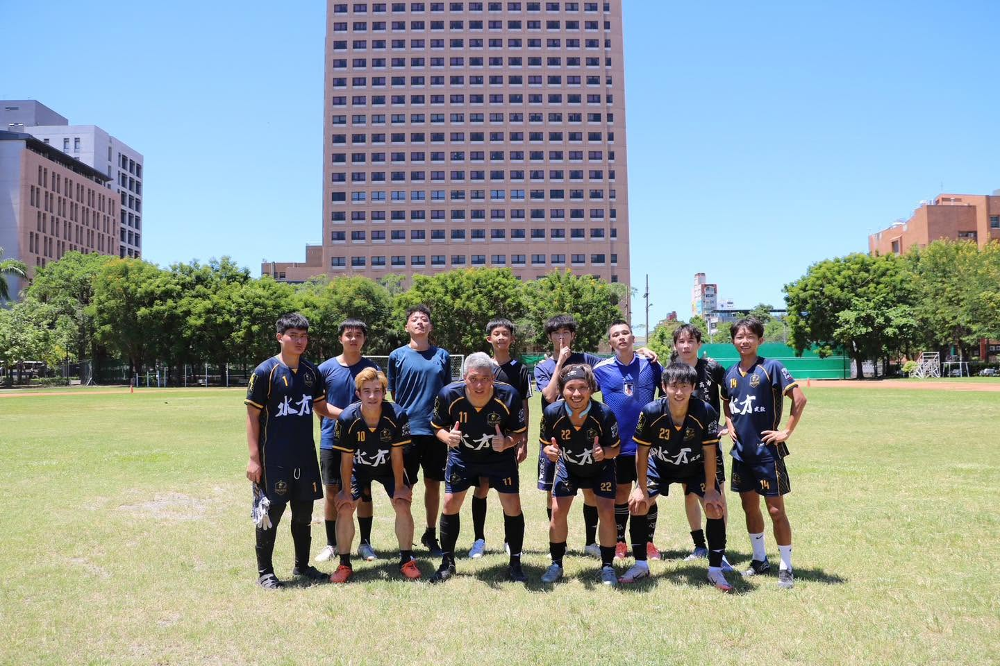

聖騎士足球俱樂部
PALADIN FC

>Paladin FC | 聖騎士足球俱樂部｜騎士學院
俱樂部成立於 2025 年，為 聖騎士足球俱樂部專為青少年與足球愛好者打造的系統化培訓基地。我們致力於推廣足球運動，將一隊於業餘賽事積累的實戰經驗與熱情向下紮根，為不同年齡層與技術階段的學員提供專業、安全且充滿樂趣的訓練環境。
在 PALADIN FC，我們以「高頻扎實訓練、定期實戰檢驗、團隊共榮」為核心理念。為了確保訓練品質與身體記憶的延續，我們提供每週至少兩次的高質量系統化課程，扎實打磨學員的個人基本功與戰術觀念。我們同時貫徹「以賽促練」的精神，搭配定期舉辦的友誼賽與交流賽，讓學員在真實比賽的張力下學習閱讀比賽與團隊配合。透過每週至少兩次的密集訓練與定期賽事檢驗，我們不僅培養出技術扎實的球員，更重視學員在過程中養成的自律態度與抗壓能力，讓他們在享受足球熱情的同時收穫終身受用的品格。
2026/27賽季 深藍主場

2026/27賽季 粉紅客場


0+
總參賽賽事
冠軍 0 座
聯賽冠軍
冠軍 0 座
杯賽冠軍
0+
團隊總進球
高雄市立足球場

不論是友誼賽約戰、加盟諮詢或贊助合作，歡迎隨時寄信給我們！
點擊下方按鈕，系統將自動為您開啟 Gmail 或預設郵件軟體，直接發送信件至球隊官方信箱！
開啟信箱寄信給球隊 若點擊無反應，請點此開啟 Chrome 網頁版 Gmail 寄信官方信箱：dark98421@gmail.com